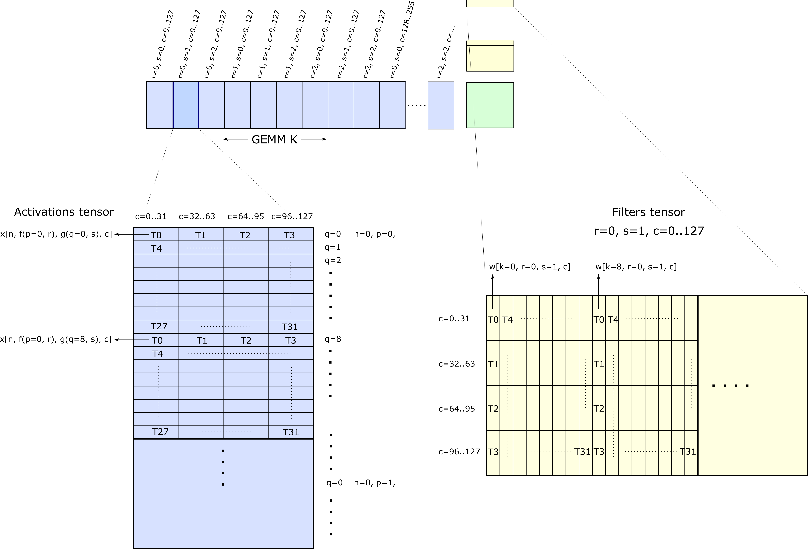
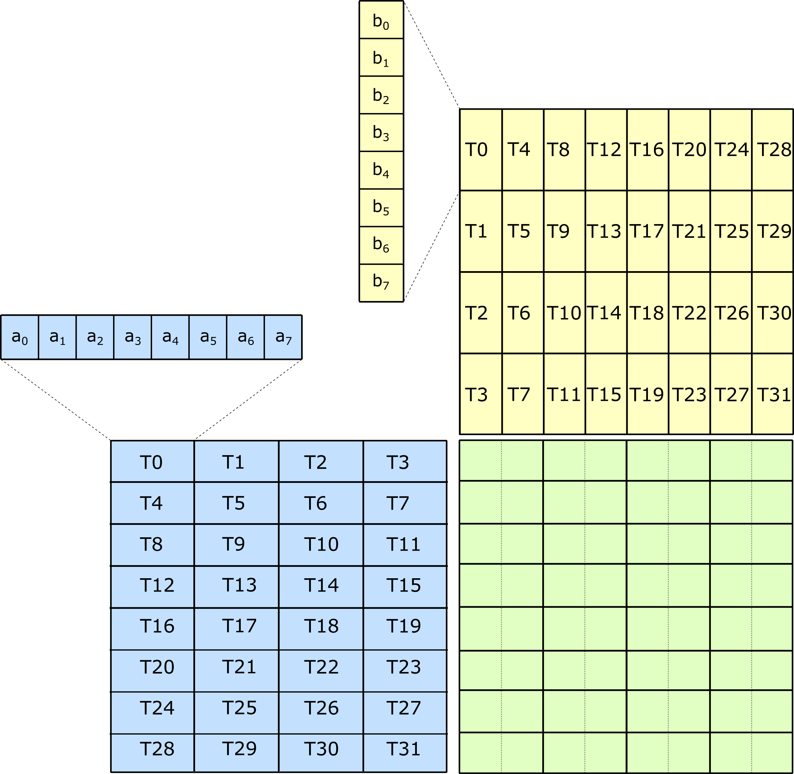
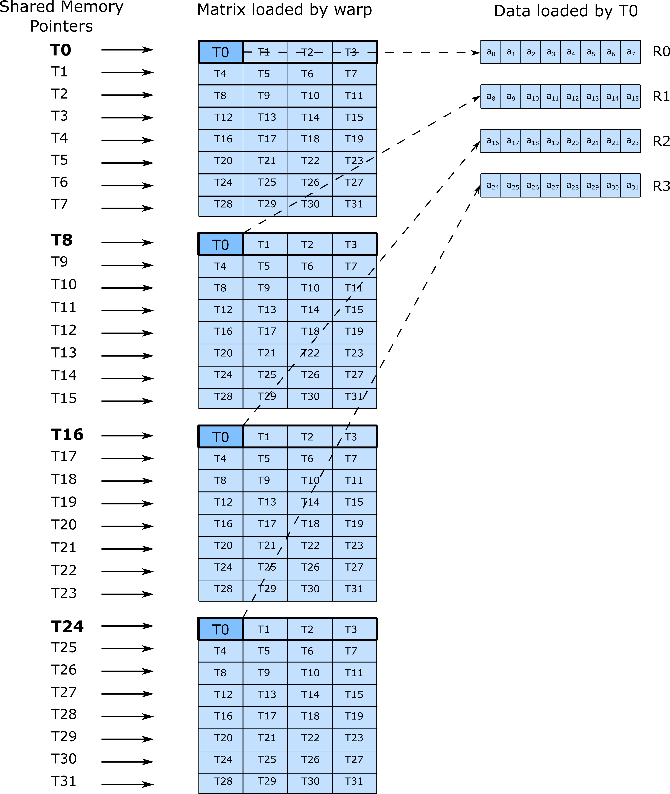
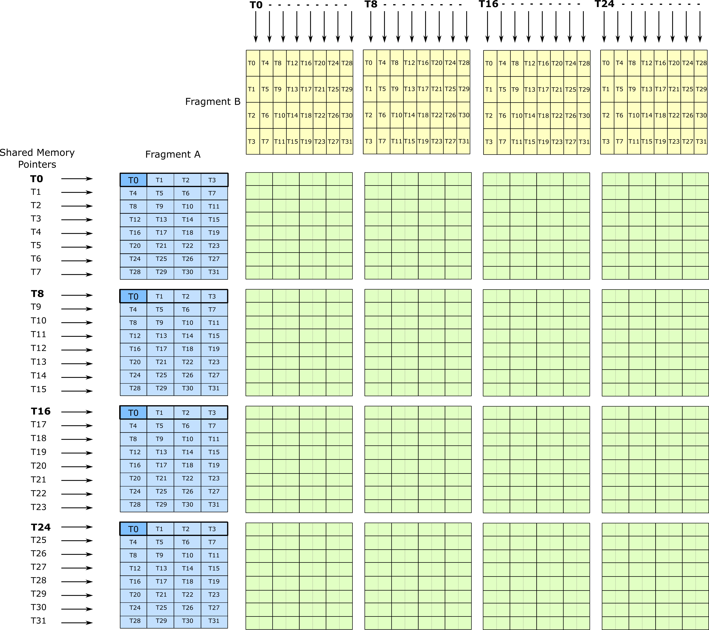

CUTLASS Convolution
Implicit GEMM is the formulation of a convolution operation as a GEMM (generalized matrix-matrix product). Convolution takes an activation tensor and applies a sliding filter on it to produce an output tensor.
Introduction
This release of CUTLASS contains several artifacts related to convolution.
Implicit GEMM Algorithm
2-D convolution may be mapped to matrix multiply by first forming a convolution matrix containing elements of the activations tensor, then multiplying this by a matrix formed from the filters tensor. The earliest form of this algorithm constructs the convolution matrix explicitly via an operation conventionally referred to as im2col. The resulting matrix replicates each activation element by a factor equal to the filter size, consuming additional storage capacity and memory bandwidth.
The implicit GEMM algorithm is a variation on the blocked, hierarchical GEMM computation in CUDA. Instead of constructing the convolution matrix explicitly, it forms tiles of the convolution matrix on the fly as data are loaded from global memory into Shared Memory by carefully updating pointers and predicates. Once the convolution matrix is formed in Shared Memory, the existing warp-level GEMM components accumulate the result of convolution and update the output tensor.
This section describes the structure of an efficient Implicit GEMM Convolution CUDA kernel for Turing Tensor Cores.
Mapping Convolution to GEMM
The forward convolutional layer computes an output tensor y = conv(x, w) where x(NHWC), w(KRSC), and y(NPQK) are 4-D tensors.
This computation may be described by the following analytic function.
y[n, p, q, k] = sum_c(sum_r(sum_s( x[n, f(p, r), g(q, s), c] * w[k, r, s, c] )))where functions f and g are defined as follows.
f(p, r) = p * stride_h + R - r - 1 + pad_h
g(q, s) = q * stride_w + S - s - 1 + pad_wA host and device reference implementation are provided in the CUTLASS Utilities.
This computation may be mapped to the elements of a matrix product as follows.
C = gemm(A, B)where - A is a row-major matrix of extent NHW-by-RSC containing activations - B is a column-major matrix of extent RSC-by-K containing filters - C is a row-major matrix of extent NPQ-by-K containing the output
Each element of the output matrix Cij corresponds to an element in the output tensor y[n, p, q, k] according to the following relation.
y[n, p, q, k] = Cijwhere
i = q + Q * (p + P * n)
j = kThese relations may be inverted as follows.
k = j
n = i / (PQ)
residual = i % (PQ)
p = residual / Q
q = residual % QThe triple loop nest iterating over CRS to accumulate the result may also be linearized and mapped to the inner GEMM K dimension (not to be confused with the filter tensor dimension K) by the following relations.
gemm_k = s + S * (r + R * c)and inverse
c = gemm_k / (RS)
residual = gemm_k % (RS)
r = residual / S
s = residual % SGiven these equations, a GEMM triple loop nest could be augmented with tensor indexing as follows.
int GEMM_M = N * P * Q;
int GEMM_N = K;
int GEMM_K = C * R * S;
for (int gemm_i = 0; gemm_i < GEMM_M; ++gemm_i) {
for (int gemm_j = 0; gemm_j < GEMM_N; ++gemm_j) {
int n = gemm_i / (PQ);
int npq_residual = gemm_i % (PQ);
int p = npq_residual / Q;
int q = npq_residual % Q;
Accumulator accum = 0;
for (int gemm_k = 0; gemm_k < GEMM_K; ++gemm_k) {
int k = gemm_j;
int c = gemm_k / (RS);
int crs_residual = gemm_k % (RS);
int r = crs_residual / S;
int s = crs_residual % S;
int h = f(p, r);
int w = g(q, s);
ElementA a = tensor_A.at({n, h, w, c});
ElementB b = tensor_B.at({k, r, s, c});
accum += a * b;
}
C[gemm_i * K + gemm_j] = accum;
}
}The CUTLASS GEMM implementation explicitly iterates over tiles. Consequently, a tile iterator could be implemented to compute these functions analytically and load the appropriate elements. However, the resulting modulo arithmetic would be computationally intensive, and overhead would limit performance of a GEMM kernel targeting Turing Tensor Cores.
The following section describes how an efficient implementation may be implemented within the structure of a hierarchical GEMM kernel targeting Tensor Cores.
CUTLASS Convolution Implementation
To get the best performance, the following parameters are recommended.
- All tensors are 128-bit aligned NHWC tensors
- Channel count (C) is a multiple of 32 elements
- Filter count (K) is a multiple of 32 elements
This enables 128-bit vector memory acceses which lead to efficient CUDA kernels. Smaller alignment is supported even on tensor cores by setting AlignmentA and AlignmentB in conv::kernel::DefaultConv2dFprop, but the performance is lower than 128-bit aligned tensors.
CUTLASS Device-level Convolution Operator
CUTLASS defines CUDA C++ templates accepting numerous template arguments to specialize the resulting kernel by operation, data type, tile configuration, math instruction, and fused output operation.
In turing_tensorop_conv2dfprop.cu, a convolution operation is defined as follows.
/// Define an Implicit GEMM convolution forward propagation (fprop) kernel
using Conv2dFpropKernel = typename cutlass::conv::kernel::DefaultConv2dFprop<
ElementInputA, // data type of element a (mapped to activation for fprop)
LayoutInputA, // layout of element a (mapped to activation for fprop)
ElementInputB, // data type of element b (mapped to filters for fprop)
LayoutInputB, // layout of element b (mapped to filters for fprop)
ElementC, // data type of element c (mapped to output for fprop)
LayoutC, // layout of element c (mapped to output for fprop)
ElementAccumulator, // data type of internal accumulation
MMAOp, // opcode class tag
SmArch, // target SM architecture
ThreadblockShape, // shape of threadblock tile
WarpShape, // shape of warp-level GEMM tile
InstructionShape, // shape of target math instruction
EpilogueOp, // epilogue operator
SwizzleThreadBlock, // optional function to reorder threadblocks for locality
NumStages, // number of pipeline stages in threadblock-scoped GEMM
cutlass::arch::OpMultiplyAddSaturate, // math operation on data of element a and b
cutlass::conv::IteratorAlgorithm::kOptimized // global memory iterator algorithm
>::KernelThis template is intended to be generic and cover all feasible configurations. The example specifies the following concrete data types, layouts, and tile shapes.
/// Define an Implicit GEMM convolution forward propagation (fprop) kernel
using Conv2dFpropKernel = typename cutlass::conv::kernel::DefaultConv2dFprop<
cutlass::int4b_t, // data type of element a (mapped to activation for fprop)
cutlass::layout::TensorNHWC, // layout of element a (mapped to activation for fprop)
cutlass::int4b_t, // data type of element b (mapped to filters for fprop)
cutlass::layout::TensorNHWC, // layout of element b (mapped to filters for fprop)
int32_t, // data type of element c (mapped to output for fprop)
cutlass::layout::TensorNHWC, // layout of element c (mapped to output for fprop)
int32_t, // data type of internal accumulation
cutlass::arch::OpClassTensorOp, // opcode class tag
cutlass::arch::Sm75, // target SM architecture
cutlass::gemm::GemmShape<128, 128, 128>, // shape of threadblock tile
cutlass::gemm::GemmShape<64, 64, 128>, // shape of warp-level GEMM tile
cutlass::gemm::GemmShape<8, 8, 32>, // shape of target math instruction
cutlass::epilogue::thread::LinearCombinationClamp<
int32_t, // data type of output matrix
8, // The number of elements per vectorized
// memory access. This becomes the vector width of
// math instructions in the epilogue too.
int32_t, // Data type of accumulator
float>; , // epilogue operator
SwizzleThreadBlock, // optional function to reorder threadblocks for locality
2, // number of pipeline stages in threadblock-scoped GEMM
cutlass::arch::OpMultiplyAddSaturate, // math operation on data of element a and b
cutlass::conv::IteratorAlgorithm::kOptimized // global memory iterator algorithm
>::KernelThat is, this computes 2D convolutional forward propagation with 4-bit integer inputs and outputs (cutlass::int4b_t). Internal accumulation is performed using 32-bit integers (int32_t), and an elementwise linear combination operation is performed on the output in single-precision floating point (float).
The threadblock and warp-level tile shapes refer to the hierarchically blocked GEMM computation described here. Larger tiles achieve greater reuse of data loaded through shared memory but launch fewer CTAs and may not fully occupy the GPU for small problem sizes. Smaller tile configurations achieve lower peak utilizations but may better match the number of SMs within the GPU for real-world workloads.
Launching the convolution
The following code collects the arguments for an implicit GEMM operation into a structure.
//
// Define arguments for CUTLASS Convolution
//
// mode (kCrossCorrelation or kConvolution)
cutlass::conv::Mode mode = cutlass::conv::Mode::kCrossCorrelation;
// Split K dimension into 1 partitions
int split_k_slices = 1;
cutlass::conv::Conv2dProblemSize problem_size(
options.input_size,
options.filter_size,
options.padding,
options.conv_stride,
options.dilation,
options.output_size(),
mode,
split_k_slices);
typename ImplicitGemm::Arguments arguments{
problem_size,
tensor_a.device_ref(),
tensor_b.device_ref(),
tensor_c.device_ref(),
tensor_c.device_ref(),
{options.alpha, options.beta},
};The mode flag indicates whether to compute cross correlation or convolution. The arguments input_size, filter_size, padding, conv_stride, and dilation specify the dimensions of the input and output tensors and characterize the problem size.
The arguments tensor_a.device_ref(), tensor_b.device_ref(), and tensor_c.device_ref() are CUTLASS TensorRef<> objects containing a pointer to the tensor data in GPU device memory and stride values.
The following code initializes and launches the Implicit GEMM operation on the device. After initializing the arguments structure, it is used to query device-side workspace requirements and allocate them in device memory if needed.
Then, the Implicit GEMM object is initialized with the arguments structure and the workspace in device memory. This initialization step precomputes internal lookup tables used by the convolution kernel and may also clear the device-side workspace if needed.
Finally, the initialized Implicit GEMM object is called, launching a kernel on the device. tensor_c now contains the result of the implicit GEMM.
ImplicitGemm implicit_gemm_op;
// Query workspace size
size_t workspace_size = implicit_gemm_op.get_workspace_size(arguments);
// Allocate workspace memory
cutlass::device_memory::allocation<uint8_t> workspace(workspace_size);
// Initialize the Implicit GEMM object
cutlass::Status status = implicit_gemm_op.initialize(arguments, workspace.get());
if (status != cutlass::Status::kSuccess) {
/* error */
}
//
// Launch initialized CUTLASS kernel
//
status = implicit_gemm_op();
if (status != cutlass::Status::kSuccess) {
/* error */
}The example demonstrates how the input and output tensors may be written to a file as CSV using cutlass::HostTensor<> defined in the CUTLASS Utilities.
std::ofstream output_workspace(ss.str());
output_workspace
<< "Input = \n" << tensor_a.host_view() << "\n\n"
<< "Filters = \n" << tensor_b.host_view() << "\n\n";
// Copy device memory to host backing store
tensor_c.sync_host();
output_workspace << "Computed = \n" << tensor_c.host_view() << std::endl;CUTLASS Components
CUTLASS defines the following CUDA C++ templates to implement Implicit GEMM Convolution which are described in greater detail in subsequent sections.
Activations tile iterators load the activations tile into registers. Two implementations are provided: - conv2d_fprop_activation_tile_access_iterator_analytic.h computes pointer deltas and masks analytically - conv2d_fprop_activation_tile_access_iterator_optimized.h optimizes iterating over global memory and creating GEMM-A tile in shared memory.
Filter tile iterators load filters into registers. Similarly, two implementations are provided: - conv2d_fprop_filter_tile_access_iterator_analytic.h computes pointer deltas and masks analytically - conv2d_fprop_filter_tile_access_iterator_optimized.h optimizes iterating over global memory and creating GEMM-B tile in shared memory.
The improvements covered by optimized iterators are:
- Precomputing kernel-invariant pointer deltas on the host
- Computing cta-invariant mask predicates on device-side iterator ctors
- Use of fast divmod to map GEMM dimensions to convolution tensors.
For example, an optimized activation iterator uses fast divmod to map GEMM M to NPQ.
Pipelined mainloop loads threadblock-scoped tiles from global memory into shared memory and then applies CUTLASS warp-level GEMM operations to load from Shared Memory and issue instructions to Turing Tensor Cores. - mma_pipelined.h
Operations for storing to shared memory and performing warp-wide matrix multiply operations using Turing Tensor Cores are applied directly from the CUTLASS GEMM components. These include the following components.
Regular Tile Iterator implemented in transform::threadblock::RegularTileIterator stores register-backed fragments to Shared Memory in permuted layouts.
Warp-level GEMM defined in cutlass::gemm::warp::MmaTensorOp defines tile iterators to load from Shared Memory and issue math instructions to Turing Tensor Cores. Further details are described in here.
Epilogue reorders accumulator elements among threads within a threadblock to efficiently update the output tensor. It is implemented in epilogue::threadblock::Epilogue.
Loading Activations and Filters
The Implicit GEMM Convolution algorithm partitions the GEMM K dimension (of extent CRS) into threadblock tiles and assigning each threadblock tile to one filter position and an interval of channels. After iterating over all filter positions, the convolution algorithm advances to the next interval of channels and proceeds from filter r=0, s=0.
The matrix product of one threadblock tile is computed per iteration of the mainloop as described in the CUTLASS GEMM implementation. To summarize, the threadblock tile of activations and filters are loaded from tensors in global memory and stored to shared memory. Each thread within the threadblock loads one or more vectors and collectively span the entire tile.
The following figure illustrates one particular iteration of the Implicit GEMM mainloop. Each thread within the threadblock is mapped to several vectors of elements in the Activations and Filters tensors. Each index in the GEMM M dimension corresponds to a unique (N,P,Q) index of the output tensor, and pointers may be computed based on this as well as filter position (r,s).

The CUTLASS component that embodies this functionality is Conv2dFpropFilterTileAccessIteratorAnalytic. Its constructor computes the mapping of GEMM M to (N, P, Q), the at() method maps the linear offset into the Activations tensor for each memory access the thread is to perform. Additionally, the method valid() computes the valided of the access for each filter position and for each memory access to indicate whether the memory access will be within the bounds of the tensor or out of bounds.
operator++() iterates over memory accesses performed by a thread in both contiguous and strided dimension.
// cutlass/conv/threadblock/conv2d_fprop_activation_tile_access_iterator_analytic.h
// Update iterator to thread's next contiguous, strided memory access
Conv2dFpropActivationTileAccessIteratorAnalytic &operator++() {
++iteration_contiguous_;
if (iteration_contiguous_ < ThreadMap::Iterations::kContiguous) {
return *this;
}
iteration_contiguous_ = 0;
++iteration_strided_;
if (iteration_strided_ < ThreadMap::Iterations::kStrided) {
return *this;
}
iteration_strided_ = 0;
return *this;
}After all accesses have been visited for the current threadblock tile, advance() updates the pointers to next tile. Offsets added to each pointer follows the traversal of filter positions, performing one of the following: - advance from filter position (r, s, c) to filter position (r, s+1, c) - advance from filter position (r, S-1, c) to filter position (r+1, 0, c) - advance from filter position (R-1, S-1, c) to filter position (0, 0, c+32)
This logic within method advance()’s body computes the above three updates for the activation GEMM-A tile.
// cutlass/conv/threadblock/conv2d_fprop_activation_tile_access_iterator_analytic.h
// Advance to the next access
void advance() {
// moves to the next tile
++filter_s_;
if (filter_s_ < problem_size_.S) {
return;
}
filter_s_ = 0;
++filter_r_;
if (filter_r_ < problem_size_.R) {
return;
}
filter_r_ = 0;
filter_c_ += Shape::kRow * problem_size_.split_k_slices;
}Similar logic holds for Conv2dFpropFilterTileAccessIteratorAnalytic.
To reduce computational overhead in the mainloop body, the pointer offsets may be precomputed in host code and provided to the CUDA kernel as a lookup table in its Params structure. As shown in Conv2dFpropFilterTileAccessIteratorOptimized, the logic to compute offsets from filter position has been extracted to the Params constructor.
// cutlass/conv/threadblock/conv2d_params.h
struct Conv2dFpropActivationIteratorOptimizedParams<layout::TensorNHWC> {
...
// next S
inc_next[0] = conv_sign * (int64_t(layout.stride()[0]) * problem_size.dilation_w) * element_size_bits / 8;
// next R
inc_next[1] = conv_sign * (
int64_t(layout.stride()[1]) * problem_size.dilation_h
- (problem_size.S - 1) * layout.stride()[0] * problem_size.dilation_w
) * element_size_bits / 8;
// next C
inc_next[2] = (
threadblock_shape.column() * problem_size.split_k_slices
- conv_sign * int64_t(problem_size.R - 1) * layout.stride()[1] * problem_size.dilation_h
- conv_sign * int64_t(problem_size.S - 1) * layout.stride()[0] * problem_size.dilation_w
) * element_size_bits / 8;
...
}This allows only a simple lookup from the delta table performed in device code in Conv2dFpropActivationTileAccessIteratorOptimized::advance().
// cutlass/conv/threadblock/conv2d_fprop_activation_tile_access_iterator_optimized.h
CUTLASS_HOST_DEVICE
void advance() {
int next_idx = 0;
// moves to the next tile
++filter_s_;
if (filter_s_ == problem_size_.S) {
filter_s_ = 0;
++filter_r_;
if (filter_r_ < problem_size_.R) {
next_idx = 1;
}
else {
filter_r_ = 0;
next_idx = 2;
}
}
add_byte_offset_(params_.inc_next[next_idx]); // in addition to Conv2dFpropActivationTileAccessIteratorAnalytic::advance()
if (next_idx == 2) {
filter_c_ += params_.filter_c_delta;
}
}Making use of Tensor Cores
Turing Tensor Cores compute matrix multiply-accumulate operations efficiently by sharing data among all threads within a warp. The following operations are supported.
| Shape | A | B | C |
|---|---|---|---|
| 8x8x32 | int4b_t | int4b_t | int32_t |
| 8x8x16 | int8b_t | int8b_t | int32_t |
| 16x8x8 | half | half | half |
| 16x8x8 | half | half | float |
Functionally, the Turing 8x8x32 matrix multiply operation distributes the A, B, and C matrix across 32 threads within a warp according to the following illustration.

This Tensor Core operation is accessible to the CUDA programmer via the PTX instruction mma.sync. CUTLASS wraps inline PTX with device-side intrinsics defined in cutlass/arch/mma_sm75.h as in the following example.
unsigned A; // eight packed 4-bit integer elements
unsigned B; // eight packed 4-bit integer elements
int C[2]; // two 32-bit integer elements
int D[2]; // two 32-bit integer elements
asm volatile(
"mma.sync.aligned.m8n8k32.row.col.s32.s4.s4.s32 {%0,%1}, {%2}, {%3}, {%4,%5};\n"
: "=r"(D[0]), "=r"(D[1])
: "r"(A), "r"(B), "r"(C[0]), "r"(C[1]));To load data efficiently from Shared Memory into registers with the distribution among warps matching the above, the Turing GPU architecture introduces ldmatrix. ldmatrix is the ultimate warp-cooperative instruction, as all threads contribute addresses to up to 32 row vectors of size 128-bits in length. These rows are fetched from Shared Memory and then distributed among groups of four threads per row.
The arrangement of SMEM pointers and destination registers within threads is illustrated as follows. Thread 0 is highlighted in the illustration to emphasize the mapping.

The size of the Turing Tensor Core operation computing matrix multiply-accumulate on INT4 data is 8-by-8-by-32 elements. ldmatrix fetches up to 32 rows (or columns) per operation. Sixteen Tensor Core operations may be issued to implement a 32-by-32-by-32 matrix product and perfectly consume all data loaded by two ldmatrix instructions as shown in the following figure. Larger tiles are possible by increasing the number of memory instructions and issuing more Tensor Core operations, up to warp-level matrix operations of size 64-by-64-by-32. The limit is the number of registers to hold the accumulator elements.

Updating the Output Tensor
After the mainloop terminates, the accumulator tile of the warp-level GEMM stores a warp’s contribution to the output tensor. However, the distribution of data among threads within the threadblock is specialized for efficient matrix multiply-accumulate operations using Tensor Cores and is not conducive to efficient, coalesced operations to Global Memory. A data rearrangement is needed.
The Epilogue is the component for exchanging accumulator elements through Shared Memory, loading slices of the output matrix or tensor, applying an elementwise operation such as linear scaling or bias, and storing the result to the output tensor. CUTLASS structures this as several components: - cutlass::epilogue::threadblock::Epilogue - the top-level component for looping over the entire threadblock tile - cutlass::epilogue::warp::TileIteratorTensorOp - a specialized component for storing accumulators for Tensor Core to Shared Memory - cutlass::epilogue::threadblock::SharedLoadIterator - a component for loading elements from a row-major arrangement in Shared Memory - cutlass::epilogue::threadblock::PredicatedTileIterator - a component for loading or storing matrix fragments to Global Memory (with bounds checks) - cutlass::epilogue::thread::LinearCombination - an element-wise function computing alpha * AB + beta * C to compute the final output
Unit Tests
Unit tests verify the functional behavior of each of the above components in a standalone CUDA kernel. This provides a convenient environment to
- inspect the template definition,
- showcase instantiation of use of these templates in device code, and
- assert functional correctness.
Convolution unit tests - Device-wide convolution operator: conv2d_fprop_implicit_gemm_s4nhwc_s4nhwc_s32nhwc_tensor_op_s32_sm75.cu
GEMM unit tests - Warp-scoped matrix multiply for Turing Tensor Cores: gemm_sm75.cu
Epilogue unit tests - Epilogue for Turing Tensor Cores: epilogue_tensor_op.cu
Convolution Example
This section describes the provided convolution example and is intended to orient the reader to the CUTLASS implementation of Implicit GEMM Convolution.
Building and Running the Example
Example 09_turing_tensorop_conv2dfprop computes a forward convolutional layer in which inputs and outputs are 4-b integers. The example source is visible in examples/09_turing_tensorop_conv2dfprop/turing_tensorop_conv2dfprop.cu.
Before building the example, first perform the prerequisite steps for building any CUTLASS component described here. Compute capability 7.5 refers to the Turing architecture, and this work requires CUDA 10.2 Toolkit or later to target Turing Tensor Cores using the native mma PTX instruction.
$ mkdir build && cd build
$ cmake .. -DCUTLASS_NVCC_ARCHS=75To build the example, execute make 09_turing_tensorop_conv2dfprop from the build directory.
$ make 09_turing_tensorop_conv2dfprop
$ ls examples/09_turing_tensorop_conv2dfprop
examples/09_turing_tensorop_conv2dfpropThis example provides a simple command line interface to specify the extents of 4D tensors of 4-bit integer elements (cutlass::int4b_t), initialize them to random values, and compute the result of a convolutional layer. Optionally, the input and output tensors may be saved to .csv files, and the CUTLASS host-side reference check may be executed to verify correctness.
The complete usage statement is visible by running with --help:
$ ./examples/09_turing_tensorop_conv2dfprop/09_turing_tensorop_conv2dfprop --help
09_turing_tensorop_conv2dfprop example
This example uses Turing's Tensor Core operators on int4 data types to compute
forward convolution on tensors of layout NHWC.
Options:
--help If specified, displays this usage statement.
--n <int> Input tensor extent N
--h <int> Input tensor extent H
--w <int> Input tensor extent W
--c <int> Input tensor extent C
--k <int> Filter extent K
--r <int> Filter extent R
--s <int> Filter extent S
--alpha <float> Epilogue scalar alpha
--beta <float> Epilogue scalar beta
--ref-check If set (true), reference check on the host is computed
--perf-check If set (true), performance is measured.
--benchmark If set (true), performance benchmarking on several layers and batch-size.
--iterations <int> Number of profiling iterations to perform.
--save-workspace If set, workspace is written to a text file.
--tag <string> String to replicate across the first column in the results table
Examples:
$ ./examples/09_turing_tensorop_conv2dfprop/09_turing_tensorop_conv2dfprop --n=32 --h=224 --w=224 --c=128 --k=256 --r=1 --s=1
$ ./examples/09_turing_tensorop_conv2dfprop/09_turing_tensorop_conv2dfprop --n=1 --h=224 --w=224 --c=32 --k=32 --r=3 --s=3 --ref-checkNote, this example assumes all tensors are 128b aligned and in format NHWC. Consequently, dimension C must be divisible by 32 for activations, filters, and output.
If the option --benchmark is passed, several layers from ResNet50 are profiled for various batch sizes. This sample output was computed on an NVIDIA RTX 2080 compiled with CUDA 10.2.
build$ ./examples/09_turing_tensorop_conv2dfprop/09_turing_tensorop_conv2dfprop --benchmarkConvolution can also be run by the CUTLASS Profiler.
Copyright
Copyright (c) 2017 - 2025 NVIDIA CORPORATION & AFFILIATES. All rights reserved. SPDX-License-Identifier: BSD-3-Clause
Redistribution and use in source and binary forms, with or without
modification, are permitted provided that the following conditions are met:
1. Redistributions of source code must retain the above copyright notice, this
list of conditions and the following disclaimer.
2. Redistributions in binary form must reproduce the above copyright notice,
this list of conditions and the following disclaimer in the documentation
and/or other materials provided with the distribution.
3. Neither the name of the copyright holder nor the names of its
contributors may be used to endorse or promote products derived from
this software without specific prior written permission.
THIS SOFTWARE IS PROVIDED BY THE COPYRIGHT HOLDERS AND CONTRIBUTORS "AS IS"
AND ANY EXPRESS OR IMPLIED WARRANTIES, INCLUDING, BUT NOT LIMITED TO, THE
IMPLIED WARRANTIES OF MERCHANTABILITY AND FITNESS FOR A PARTICULAR PURPOSE ARE
DISCLAIMED. IN NO EVENT SHALL THE COPYRIGHT HOLDER OR CONTRIBUTORS BE LIABLE
FOR ANY DIRECT, INDIRECT, INCIDENTAL, SPECIAL, EXEMPLARY, OR CONSEQUENTIAL
DAMAGES (INCLUDING, BUT NOT LIMITED TO, PROCUREMENT OF SUBSTITUTE GOODS OR
SERVICES; LOSS OF USE, DATA, OR PROFITS; OR BUSINESS INTERRUPTION) HOWEVER
CAUSED AND ON ANY THEORY OF LIABILITY, WHETHER IN CONTRACT, STRICT LIABILITY,
OR TORT (INCLUDING NEGLIGENCE OR OTHERWISE) ARISING IN ANY WAY OUT OF THE USE
OF THIS SOFTWARE, EVEN IF ADVISED OF THE POSSIBILITY OF SUCH DAMAGE.